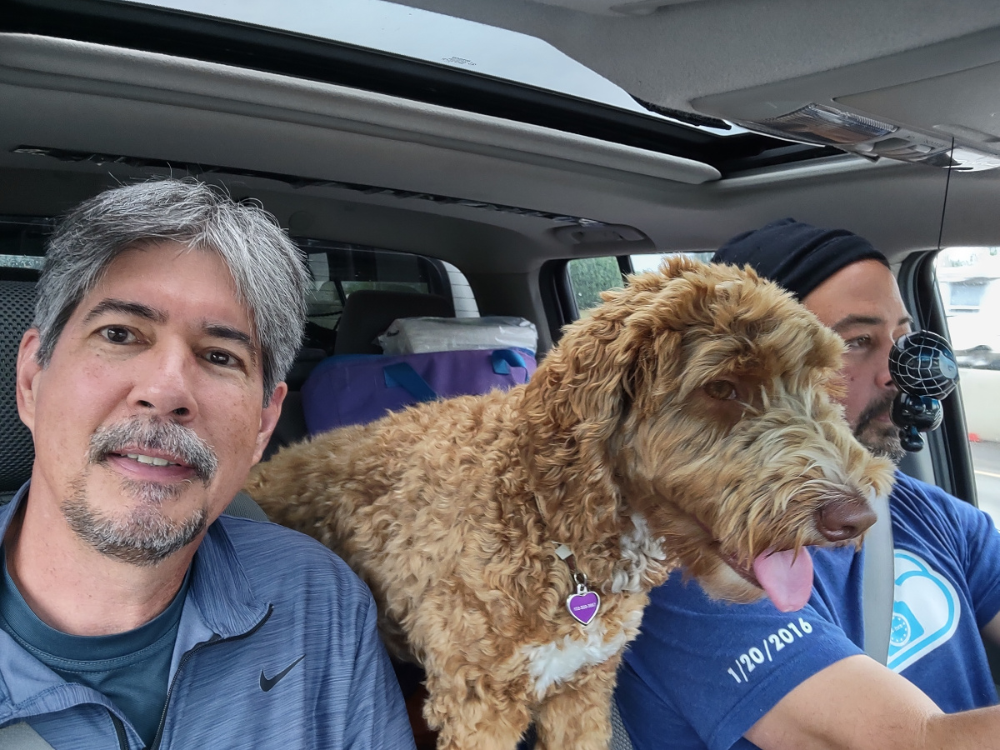
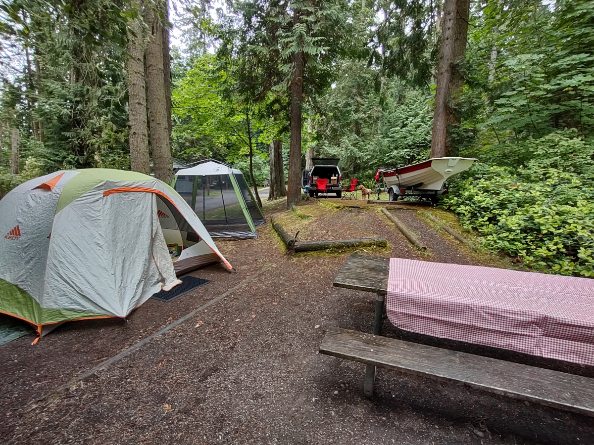
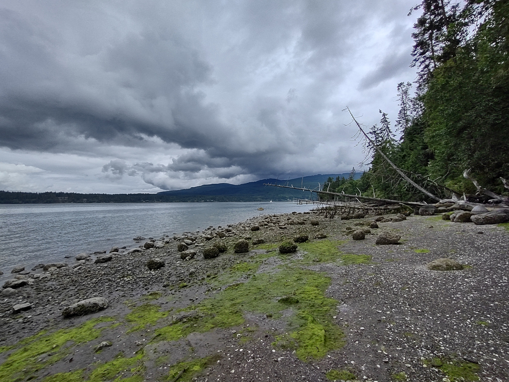

Tony, Mike and Cloe’s camping trip to Olympic Peninsula along the Strait of Juan de Fuca
We were tent camping on the Olympic Peninsula along the Strait of Juan de Fuca. The weather was cool and a bit misty in the mornings. Days were spent doing day hikes and riding bikes. One day we took his boat (17 ft row/sail boat) out to the lighthouse on Dungeness spit.
Tue, June 20, 2023
Drive: https://goo.gl/maps/zw6RVQCexhy71Whn8
/media/veracrypt1/work2go/trip reports for editing/Squim photos/IMG_20230620_101213252_HDR.jpg 
set up camp Sequim Bay State Park
Discover the northern Olympic Peninsula at Sequim Bay State Park!
Set in one of the driest micro-climates west of the Cascade Mountains, Sequim Bay hosts a stretch of the Olympic Discovery Trail (ODT), a 120-mile, multi-use recreation trail that extends from Port Townsend west to the Pacific Ocean.
Approximately half those trail miles are paved, while the remaining miles are unimproved or under construction. The trail crosses a high bridge completed in 2016 to allow salmon passage in the stream below. Trail users will enjoy passage over the smooth, graded span. Offshore moorage buoys and a watercraft launch make Sequim Bay a particularly boat-friendly park.
Ramblewood is a rustic retreat center with a commercial kitchen and sleeping space for 60 people. A lighted underpass beneath Highway 101 leads to tennis courts and ball fields on the south side of the park. Visitors can head to nearby Sequim and Port Angeles for picnic gear, shopping sprees, lattes and restaurant meals. Park features
Sequim Bay State Park is a year-round, 92-acre marine camping park with 4,909 feet of saltwater coast in the Sequim “rain shadow,” just inside Puget Sound on the Olympic Peninsula.
file:///media/veracrypt1/work2go/trip%20reports%20for%20editing/Squim%20photos/IMG_20230620_123233913_HDR.jpg 
file:///media/veracrypt1/work2go/trip%20reports%20for%20editing/Squim%20photos/IMG_20230620_141652826_HDR.jpg 
A: Bike: Sequim ←→ Port Townsend https://goo.gl/maps/364KGPsPPtF2CcpV9 Sequim Transit Center to Gateway Transit Center https://www.clallamtransit.com/route30toPortAngeles B: Row to Dungeness Spit Lighthouse https://goo.gl/maps/JuWQsLVUF7dxBCT66 Lodging: Sequim Bay State Park #79 2XRC+29 Sequim, Washington https://olympicdiscoverytrail.org/
Wed, June 21, 2023
Campfire and tents at Sequim Bay State Park
Hike out to Cape Alava
file:///media/veracrypt1/work2go/trip%20reports%20for%20editing/Squim%20photos/PXL_20230621_192638404%20copy.jpg

Ozette Loop Description
Ecosystem type: Coastal Forest and Ocean Beach Trail tread types: Well maintained - boardwalk General elevation trend: Flat with steep overland trails River crossings: None Unique features: Boardwalks, wilderness coast, bald eagle viewing, marine mammals Level of difficulty: Easy Distance: 9.2 miles Elevation change: Sea level to 100 feet Best Season: April through October
Hiking Cape Alava
Cape Alava Loop is two hikes in one: a forest stroll and a walk on the beach. For those who don’t have time for a 9-mile loop, the short hike on a beautiful boardwalk through forest is just the ticket. Take the Cape Alava Trail out to the beach and back for a 6.2 mile hike.
Start your hike at Lake Ozette. Eight miles long and three miles wide, Lake Ozette is the largest unaltered natural lake in Washington. Cross the Ozette River on a beautiful arched bridge and away you go. A quarter mile in, come to a trail junction and stay right—the trail to the left will be your return trail if you choose to make a complete loop.
Before long, your trail becomes a beautiful cedar boardwalk through dense forest of western redcedar, licorice ferns, salal, and other evergreen varieties. Use caution on the boardwalk if wet or icy, as the planks can occasionally become slippery. The elevated path gently meanders through the understory, gaining little elevation as you continue onward.
Pass through an area called Ahlstrom’s Prairie at 2.25 miles. This giant, soggy meadow was once farmed by two Swedish immigrants who filled the 160-acre bog with sheep, cattle, and vegetable gardens. Today, any evidence of the farming has given way to native plant and animal life.
The roar and smell of the ocean becomes unmistakable as you approach the wild coast of Cape Alava. At 3.3 miles, arrive at the beach and enjoy the views and creatures that live in this isolated place. Tskawahyah Island is not far off, standing as a giant rock guardian complete with freestanding trees adorning the top. Watch the winter sun sink lower in the sky and return the way you came.
file:///media/veracrypt1/work2go/trip%20reports%20for%20editing/Squim%20photos/IMG_20230621_131407569_HDR.jpg
file:///media/veracrypt1/work2go/trip%20reports%20for%20editing/Squim%20photos/IMG_20230621_133301842_HDR.jpg
Ozette Indian Village Archeological Site
The Ozette Native American Village Archeological Site is the site of an archaeological excavation on the Olympic Peninsula near Neah Bay, Washington, United States. The site was a village occupied by the Ozette Makah people until a mudslide inundated the site around the year 1750.[3] It is located in the now unpopulated Ozette Native American Reservation.
The 22-mile-long Hoko-Ozette Road, accessed via Washington State Route 112, terminates at the NPS Lake Ozette Ranger Station, within the coastal strip of Olympic National Park. The Lake Ozette Ranger Station, positioned at the north end of Ozette Lake, is approximately 3 miles from the archaeological site. The land between the Pacific coast and the Ozette River was settled by a small community of Scandinavian immigrants at the end of the 19th century; these being amongst the first Europeans to establish a permanent presence on the extreme western fringe of the Olympic Peninsula.
The area is popular with backpackers and day-hikers, many of whom undertake to complete the 9.5 mile long Ozette Loop trail; commencing/terminating at Lake Ozette Ranger Station and taking in the coastal locations of Sand Point and Cape Alava.
In 1997, a delegation from Mihama came to Ozette to commemorate the souls of three Japanese sailors whose ship ran aground in the area in 1834, and who were held briefly by the Makah before being released to Fort Vancouver.[4]
History
Around 1560 (according to radiocarbon dating), a mudslide engulfed part of a Makah village along the coast of modern-day Washington near Lake Ozette. Archaeological test pits were excavated at the Ozette site in 1966 and 1967 by Richard Daugherty.[5] However, it was not until 1970 that it became apparent what was buried there. After a storm in February 1970, tidal erosion exposed hundreds of well-preserved wooden artifacts. The excavation of the Ozette site began shortly after. University students worked with the Makah under the direction of archaeologists using pressurized water to remove mud from six buried long houses. The excavation went on for 11 years and produced over 55,000 artifacts, many of which are on display in the Makah Museum at the Makah Cultural and Research Center.[3]
The mudslide preserved several houses and their contents in a collapsed state until the 1970s when they were excavated by Makahs and archaeologists from Washington State University. More than 55,000 artifacts were recovered, spanning a period of occupation around 2,000 years,[6]: 171 representing many activities of the Makahs, from whale and seal hunting to salmon and halibut fishing; from toys and games to bows and arrows. Of the artifacts recovered, roughly 30,000 were made of wood, extraordinary in that wood generally decays particularly fast.[6]: 113 Hundreds of knives were recovered, with blade materials ranging from mussel shell,[6]: 113 to sharpened beaver teeth, and iron, presumed to have drifted from Asia on wrecked ships.[3] The oral history of the Makah mentions a “great slide” which engulfed a portion of Ozette long ago.
The Makah Museum opened in 1979 and displays replicas of cedar long houses as well as whaling, fishing, and sealing canoes.[7]
Ozette was occupied prior to frequent European visitation. It was therefore in existence before smallpox and other foreign diseases decimated the population. Since the mudslide buried the village and houses so rapidly, Ozette provides good preservation of what a society looked like as it was before abandonment or after looting.[8]
Archaeology https://content.lib.washington.edu/cmpweb/exhibits/makah/arch.html
The Makah people have inhabited Neah Bay for more than 3,810 years, according to archaeological research. While Neah Bay is the only centralized village on the contemporary reservation, there were five Makah villages prior to contact with non-Indians in 1790. One of these other villages was Ozette, the southernmost Makah village. Makahs abandoned Ozette in 1917 to send their children to school as ordered by the government. Many contemporary Makahs trace their ancestry to the Ozette village.
In the winter of 1969-1970 a storm caused the bank at the Ozette village location to slump, exposing hundreds of perfectly preserved wooden artifacts. A hiker contacted the Makah Tribe, then the Tribe phoned Washington State University, and in April 1970, some two months after the storm, excavation of the Ozette Site began. Makah oral history told of a “great slide” which buried a portion of Ozette long ago; archaeologists collaborating with the Tribe proved this oral history correct. Radiocarbon dates demonstrated that a slide some 500 + 50 years BP (before present) buried six longhouses and their respective contents, locking the pre-contact wooden and wood-based artifacts in a shroud of mud. The 11-year excavation produced over 55,000 artifacts, which the Tribe kept on the reservation. Consequently, the MCRC came about from the Tribe’s desire to curate and interpret this unique collection.
A: Bike: Sequim ←→ Port Townsend https://goo.gl/maps/364KGPsPPtF2CcpV9 B: Row to Dungeness Spit Lighthouse https://goo.gl/maps/JuWQsLVUF7dxBCT66 Lodging: Sequim Bay State Park #79
Thu, June 22, 2023
file:///media/veracrypt1/work2go/trip%20reports%20for%20editing/Squim%20photos/IMG_20230622_095501178_HDR.jpg
file:///media/veracrypt1/work2go/trip%20reports%20for%20editing/Squim%20photos/IMG_20230622_100644732_HDR.jpg
file:///media/veracrypt1/work2go/trip%20reports%20for%20editing/Squim%20photos/IMG_20230622_102801333_HDR.jpg
file:///media/veracrypt1/work2go/trip%20reports%20for%20editing/Squim%20photos/PXL_20230622_182952181.jpg
file:///media/veracrypt1/work2go/trip%20reports%20for%20editing/Squim%20photos/IMG_20230622_125500504_HDR.jpg
Dungeness Spit
Dungeness Spit is a sand spit jutting out approximately 5 miles (8 km)[1] from the northern edge of the Olympic Peninsula in northeastern Clallam County, Washington into the Strait of Juan de Fuca. It is the longest natural sand spit in the United States.[2][3] The spit is growing in length by about 15 feet (4.6 m) per year.[1][4] The body of water it encloses is called Dungeness Bay.[5]
The Dungeness Spit is entirely within the Dungeness National Wildlife Refuge and home of the New Dungeness Lighthouse. Its land area, according to the United States Census Bureau, is 1,271,454 square meters (0.4909 sq mi, or 314.18 acres). The lighthouse once was run by United States Coast Guard, but in 1976 the agency installed an automatic light. Since 1994 the lighthouse has been staffed and maintained by the volunteer “New Dungeness Light Station Association”.[6] The spit is open to the public year around. The spit has a campground and “Dungeness Recreation Area” that is also open year-round. The campground features a 1-mile long scenic bluff trail, several miles of hiking/biking trails, and a designated equestrian trail. [7]
The spit was first recorded by Europeans during the Spanish 1790 Quimper expedition. British explorer George Vancouver named the landform in 1792, writing “The low sandy point of land, which from its great resemblance to Dungeness in the British Channel, I called New Dungeness.”[8] He named it after the Dungeness headland in England.
In December 2001 a heavy winter storm forced water over the spit. The next morning the spit was split in three places, and vehicles supplying the lighthouse were not able to traverse the spit for about a month.[citation needed]
A Haven for Wildlife — Dungeness, one of the world’s longest sand spits, shelters a bay rich in marine life. Eelgrass beds attract brant, shorebirds feed on the tideflats, and ducks find sanctuary in the calm waters.
Recognizing the importance of the fertile habitats, President Woodrow Wilson established the Dungeness National Wildlife Refuge on January 20, 1915 as a refuge, preserve, and breeding ground for native birds. Today the graceful arc of Dungeness Spit continues to protect nutrient-rich tideflats for migrating shorebirds in spring and fall; a quiet bay with calm waters for wintering waterfowl; an isolated beach for harbor seals and their pups; and abundant eelgrass beds for young salmon and steelhead nurseries.
In every outthrust headland, in every curving beach, in every grain of sand there is the story of earth.
New Dungeness Light
The New Dungeness Lighthouse is a functioning aid to navigation on the Strait of Juan de Fuca, located on the Dungeness Spit in the Dungeness National Wildlife Refuge near Sequim, Clallam County, in the U.S. state of Washington.[2] It has been in continuous operation since 1857, although the current lighthouse tower is 26 feet (7.9 m) shorter than when first constructed.[3]
History
The New Dungeness Light was first lit in 1857 and was the second lighthouse established in the Washington territory,[4] following the Cape Disappointment Light of 1856. Originally, the lighthouse was a 1½-story duplex with a 100-foot (30 m) tower rising from the roof. The tower was painted black on the top half and white on the lower section.[5] Over time, the tower developed structural cracks, most likely from a combination of earthquakes and weather erosion.[6] In 1927, the cracks in the tower were so severe that the district’s chief lighthouse engineer, Clarence Sherman, noting the structural instabilities, feared that the tower would topple. It was decided that year that the tower would be lowered to its current height of 63 feet (19 m). With the new tower dimensions, the original 3rd order fresnel lens was too large for the tower. To save costs, the lantern room from the decommissioned Admiralty Head lighthouse was removed and placed atop the shorter tower. The newly painted tower was relit with a revolving 4th order Fresnel lens.[3]
In the mid-1970s the Coast Guard decided to remove the Fresnel lens and test a DCB airport style beacon. The beacon only lasted a few years until it was replaced by a much smaller AGA-acrylic revolving beacon that provided the same range as the DCB, but with a 150-watt bulb instead of the 1,000-watt DCB bulb. In 1998, the Coast Guard replaced the AGA with a newer Vega rotating beacon.[7]
The New Dungeness Light Station historic district, a 8 acres (3.2 ha) area comprising the lighthouse, the keeper’s quarters and three other contributing properties was added to the National Register of Historic Places in 1993.[1]
Keepers
Henry Blake was the lighthouse’s first keeper. The USCG coastal buoy tender WLM-563 Henry Blake based in Everett, Washington is named after him. Franklin Tucker, the temporary keeper from 1857 to 1858, replaced Blake in 1873. He remained in charge from April of that year until December 1882, when he was transferred to Ediz Hook Light Station and replaced by Amos Morgan, who served until March 1896. In the late 1890s, Oscar Brown and Joseph Dunn served as station keepers.[3]
By 1994, the Dungeness Lighthouse was one of the few lighthouses in the United States to have a full-time keeper. Michelle and Seth Jackson and their dog Chicago were the last to hold the post of lighthouse keepers.[8] In March 1994, the Coast Guard boarded up all the windows at the station, checked all the electrical equipment and left. Within months, the United States Lighthouse Society started the New Dungeness chapter and were able to secure a lease from the Coast Guard.[9] Since September 1994, members of the New Dungeness Light Station Association have manned the station 24 hours per day, 365 days per year, and tours are available to the general public between 9AM - 5PM every day.[6]
Salt Creek
file:///media/veracrypt1/work2go/trip%20reports%20for%20editing/Squim%20photos/IMG_20230622_181918503_HDR.jpg
file:///media/veracrypt1/work2go/trip%20reports%20for%20editing/Squim%20photos/original_8a822983-5aab-4291-8102-83704aac6211_PXL_20230623_054950655.NIGHT%20copy.jpg

Day 3 C: Bike and then Row Lake Crescent D: Day Hike to Shi Shi Beach https://goo.gl/maps/tqoKe61MuSCHD9VG6 https://www.nps.gov/olym/index.htm Need NP senior pass Lodging: Salt Water Creek https://www.clallamcountywa.gov/588/Salt-Creek-Recreation-Area
file:///media/veracrypt1/work2go/trip%20reports%20for%20editing/Squim%20photos/IMG_20230623_101511048.jpg
Visiting Lake Crescent
Nestled in the northern foothills of the Olympic Mountains, Lake Crescent lies about 18 miles west of Port Angeles (directions). The pristine waters of this deep, glacially carved lake make it an ideal destination for those in search of natural beauty.
A massive landslide isolated Lake Crescent from Lake Sutherland approximately 7,000 years ago. There are two uniquely adapted populations, the Crescenti and Beardslee trout, that resulted from genetic isolation following this event.
https://en.wikipedia.org/wiki/Lake_Crescent
Lake Crescent is a deep lake located entirely within Olympic National Park in Clallam County, Washington, United States, approximately 17 miles (27 km) west of Port Angeles on U.S. Route 101 and nearby to the small community of Piedmont. At an official maximum depth of 624 feet (190 m) it is officially the second deepest lake in Washington (after Lake Chelan). A lake-wide bathymetric survey was performed from 2013 to 2014 by Eian Ray and Jeff Engea and the results of this survey showed the maximum depth as being 596 feet. Using GIS statistical analysis, this survey also showed the lake contains approximately 0.5 cubic miles of fresh water.
Lake Crescent is known for its brilliant blue waters and exceptional clarity, caused by low levels of nitrogen in the water[1] which inhibits the growth of algae. It is located in a popular recreational area that is home to several trails, including the Spruce Railroad Trail, Pyramid Mountain trail, and the Barnes Creek trail to Marymere Falls. The Spruce Railroad Trail follows the grade of what was once the tracks of a logging railroad along the shores of the lake. Following this trail on the north side of the lake, one can find the entrance to an old railroad tunnel as well as “Devils Punch Bowl”, a popular swimming and diving area.
Origins
The lake was formed when glaciers carved out deep valleys during the last Ice Age. Initially, the Lake Crescent valley drained into the Indian Creek valley and then into Elwha River. Anadromous fish such as steelhead and coastal cutthroat trout migrated into the valley from lower waters.
Approximately 8,000 years ago, a great landslide from one of the Olympic Mountains dammed Indian Creek, and the deep valley filled with water. Many geologists believe that Lake Crescent and nearby Lake Sutherland formed at the same time, but became separated by the landslide.[2] This theory is supported by Klallum tribe legend which tells a story of Mount Storm King being angered by warring tribes and throwing a boulder to cut Lake Sutherland in two, resulting in Lake Crescent.[3] The results of the landslide are easily visible from the summit of Pyramid Mountain. Eventually, the water found an alternative route out of the valley, spilling into the Lyre River, over the Lyre River Falls, and out to the Strait of Juan de Fuca.
file:///media/veracrypt1/work2go/trip%20reports%20for%20editing/Squim%20photos/PXL_20230623_195722885.jpg
Salt Creek Recreation Area For those of you who stay above water, you can entertain yourself for hours or days here. At low tide, there is some of the best tidepooling around. Immerse yourself in the salt water colonies populated by a myriad of critters in their rocky pools.Kayaking from the beach is an easy launch and there are plenty of coves and rocks to explore. Wildlife is good in this area, especially marine mammals. Salt Creek Rec Area is on the Whale Trail, so it’s possible to see their spouts off the cliffs. Just enjoying the beach, strolling or finding that perfect spot out of the wind to soak up the sun in a sheltered cove. Camping and RV sites are available. It’s wise to make reservations as these picturesque sites are always in high demand. Hike to a waterfall, explore the WWII bunkers and take some photos. It feels like a world away from the hustle and bustle of highways and cities.
Tide pools, a sandy beach, hiking trails, WWII bunkers, and stunning views over Crescent Bay and the Strait of Juan de Fuca. If this sounds good to you then you’ll love Salt Creek Recreation Area.
Salt Creek Recreation Area is a 196-acre park on U.S. Route 101, around 15 miles west of Port Angeles, WA. Though it is nearly an hour and a half drive from Manitou Lodge, the park is a great stop for anyone considering a Port Angeles area day trip.
Much of the park is dedicated to tent and RV camping. Park restrooms and water are available to day-use visitors. You may also use the picnic shelters, basketball court, softball field, volleyball court, and playground.
The most popular attractions at Salt Creek Recreation Area, however, are down at the shore.
World War II Bunkers of Camp Hayden
Another huge draw for the park are the collection of old, concrete WWII bunkers and gun emplacements.
Salt Creek Recreation Area began life as a harbor defense military base named Camp Hayden, built between 1942 and 1945. Remnants of Camp Hayden remain throughout the park.
Camp Hayden consists of two large concrete bunkers, and several smaller structures. The large bunkers originally housed two 16-inch, Mark 2 guns capable of hurling a one ton projectile nearly 28 miles. Another bunker in the park sheltered two 6-inch guns. Other buildings on site served as magazine bunkers, lookouts, and fire control.
Follow the Beach to Bunker Trail from the parking area to locate the main portion of the WWII Camp Hayden site. Trails, staircases, and walkways throughout the park will lead you to other military remnants and natural attractions.
Camp Hayden Port Angeles, Washington An abandoned World War II bunker is part of a chain that runs throughout Washington.
Part of the World War II coastal defense system, the remnants of Camp Hayden can be found at the end of a thickly forested road inside the Salt Creek Recreation Area west of Port Angeles, Washington.
One of seven locations in Washington’s system, this bunker featured a fire control radar and harbor entrance radar, as well as 45-foot guns that covered the Strait of Juan de Fuca. Constructed of steel-shielded concrete, the structure was designed to withstand a direct hit.
The other six abandoned Washington installations in the WWII-era coastal defense system are Fort Worden in Port Townsend, Fort Casey, Fort Ebey, Fort Whitman, Fort Flagler on Marrowstone Island, and Fort Ward on Bainbridge Island. All of the bunkers still stand, and portions of interiors are accessible to explorers.
Fri, June 23, 2023
C: Bike and then Row Lake Crescent D: Day Hike to Shi Shi Beach https://goo.gl/maps/tqoKe61MuSCHD9VG6 E: Ozette Loop (9.4 miles loop) (and Rowing) https://goo.gl/maps/Y13C2fpKyyvhyBYs5
Sat, June 24, 2023
Day 5
Fort Worden Historical State Park
https://en.wikipedia.org/wiki/Fort_Worden
Fort Worden Historical State Park is located in Port Townsend, Washington,[1] on 433 acres (175 hectares) originally known as Fort Worden, a United States Army Coast Artillery Corps base constructed to protect Puget Sound from invasion by sea.[2] Fort Worden was named after U.S. Navy Rear Admiral John Lorimer Worden, commander of USS Monitor during the famous Battle of Hampton Roads during the American Civil War.[3]
Constructed between 1898 and 1920, Fort Worden was one of the largest Endicott Period (1890-1910) forts to be built and a rare example of a post built according to the precepts of the Endicott Board on land not already occupied by an existing fortification. It was located within sight of a potential (if unlikely) enemy fortification, a British Royal Navy installation on Vancouver Island in Canada.[4] The fort was designated a National Historic Landmark in 1976.[5]
file:///media/veracrypt1/work2go/trip%20reports%20for%20editing/Squim%20photos/IMG_20230623_164608305_HDR.jpg
Fort Flagler Historical State Park https://en.wikipedia.org/wiki/Fort_Flagler_State_Park Fort Flagler State Park is a public recreation area that occupies the site of Fort Flagler, a former United States Army fort at the northern end of Marrowstone Island in Washington.[2] The state park occupies 1,451 acres (587 ha) at the entrance to Admiralty Inlet and the Marrowstone Point Light lying adjacent. Port Townsend is visible to the northwest, the cranes at the Navy base on Indian Island to the west, and Whidbey Island to the east across Admiralty Inlet. Flagler Road (SR 116) terminates at the park entrance. History Fort Flagler was a Coast Artillery fort that along with Fort Worden and Fort Casey once guarded Admiralty Inlet, the nautical entrance to Puget Sound as part of a “Triangle of Fire” defensive plan. Admiralty Inlet was considered so strategic to the defense of Puget Sound that the three forts were placed at the entrance with huge guns creating a “triangle of fire.” This military strategy was built on the theory that the three fortresses would thwart any invasion attempt by sea.[3][4] Fort Flagler was established in 1897 and activated in 1899. The post was named for Brigadier General Daniel Webster Flagler, an American Civil War veteran who served as the Army’s Chief of Ordnance. The fort was closed in June 1953.[5][6][7] The property was purchased as a state park in 1955.
file:///media/veracrypt1/work2go/trip%20reports%20for%20editing/Squim%20photos/PXL_20230624_132949453.jpg
Amateur radio Amateur Radio, also known as ham radio, is the use of the radio frequency spectrum for purposes of non-commercial exchange of messages, wireless experimentation, self-training, private recreation, radiosport, contesting, and emergency communications.[1] The term “amateur” is used to specify “a duly authorized person interested in radioelectric practice with a purely personal aim and without pecuniary interest”;[2] (either direct monetary or other similar reward) and to differentiate it from commercial broadcasting, public safety (such as police and fire), or professional two-way radio services (such as maritime, aviation, taxis, etc.). Polish ham call sign SP1OE, Vacuum tube devices, transmitter and AR-88 receiver (1950)
The Amateur Radio service (amateur service and amateur-satellite service) is established by the International Telecommunication Union (ITU) through the Radio Regulations. National governments regulate technical and operational characteristics of transmissions and issue individual station licenses with a unique identifying call sign, which must be used in all transmissions. Amateur operators must hold an Amateur Radio license which is obtained by passing a government test demonstrating adequate technical radio knowledge and legal knowledge of the host government’s radio regulations.
Field Day (amateur radio) Field Day is an annual amateur radio contest, widely sponsored by IARU regions and member organizations, encouraging emergency communications preparedness[1] among amateur radio operators. In the United States, it is typically the largest single emergency preparedness exercise in the country, with over 30,000 operators participating each year. Field Day is always the fourth full weekend of June, beginning at 18:00 UTC Saturday and running through 20:59 UTC Sunday.
Since the first ARRL Field Day in 1933, radio amateurs throughout North America have practiced the rapid deployment of radio communications equipment in environments ranging from operations under tents in remote areas to operations inside Emergency Operations Centers (EOCs). Operations using emergency and alternative power sources are highly encouraged, since electricity and other public infrastructures are often among the first to fail during a natural disaster or severe weather.
To determine the effectiveness of the exercise and of each participant’s operations, there is an integrated competitive component, and many clubs also engage in concurrent leisure activities (e.g., camping, cookouts). Operations typically last a continuous twenty-four hours, requiring scheduled relief operators to keep stations on the air. Additional contest points are awarded for experimenting with unusual modes, making contacts via satellite, and involving youth in the activity.
file:///media/veracrypt1/work2go/trip%20reports%20for%20editing/Squim%20photos/PXL_20230624_143845418.jpg
file:///media/veracrypt1/work2go/trip%20reports%20for%20editing/Squim%20photos/PXL_20230624_181554329.jpg
file:///media/veracrypt1/work2go/trip%20reports%20for%20editing/Squim%20photos/IMG_20230624_104549929.jpg
What is this guy doing?
Ham Field Day Flagler F: Visit Geeks at Field Day, Also Check out Ft Worden and Ft Flagler (on bikes) https://www.mikeandkey.org/fday.php
Lodging: Ft Flagler (Ham Free) 37WW+4X Nordland, Marrowstone, WA http://parks.state.wa.us/508/Fort-Flagler
Fort Flagler State Park 10541 Flagler Road Nordland, WA 98358 Phone: (360) 385-1259 Campsite, vacation houses & group camp reservations Phone: (888) 226-7688 Retreat center reservations Phone: (360) 902-8600